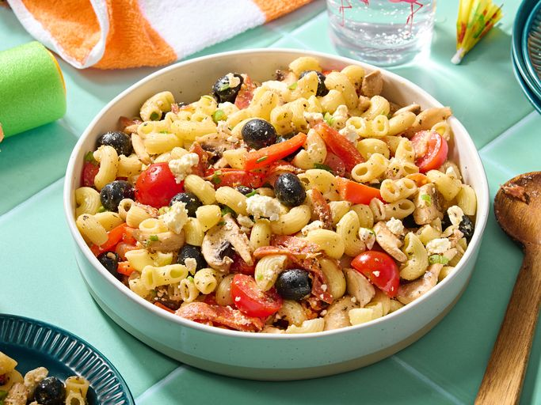

A greek salad is a healthy and tasty dish used as a light afternoon lunch.
Gather all ingredients.
Whisk olive oil, vinegar, garlic powder, basil, oregano, black pepper, and sugar together in a large bowl.
Add cooked pasta, mushrooms, tomatoes, red peppers, feta cheese, green onions, olives, and pepperoni. Toss until evenly coated.
Cover, and chill 2 hours or overnight.
Serve and enjoy!